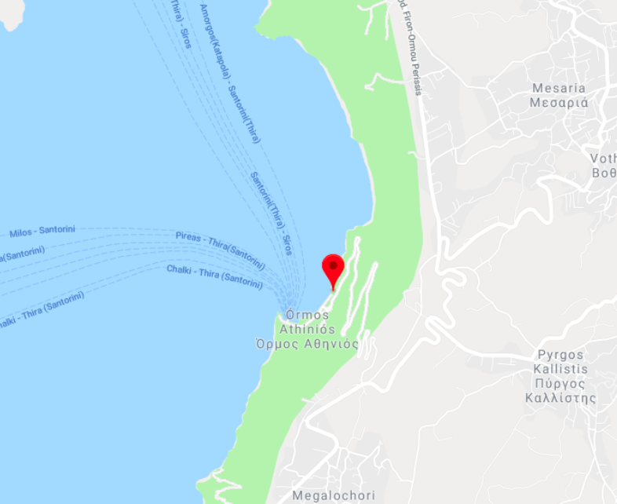

Hotel
Thaleias
home
rooms
find us
book
Where we are:
Epar.Od. Ormou Athiniou No. 750 00 Santorini, Greece
Nearby Eateries:
Spartacos Pizzeria:
Cosy - Casual - Good for kids
$
Apollon Restaurant:
Great Cocktails - Cosy - Late-night food
$$$
Senor Zorba Cafe Bar:
Groups - Casual - Vegetarian options
$

Activities & Attractions:
Epar Lookout:
Amazing cliff side view over sea - good sunset
Santo Winery:
Traditional Greek winery tour - includes lunch
$$$
Ekklisia Agia Marina Church:
Greek Orthodox Church - built early 1800s
$